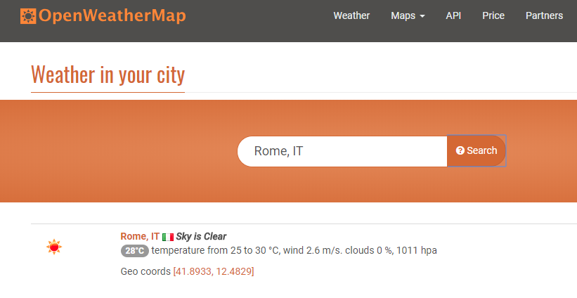
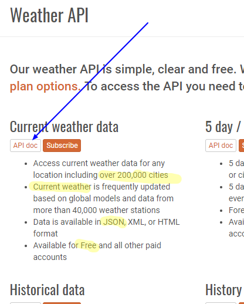
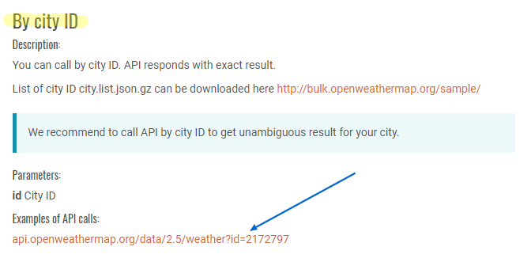
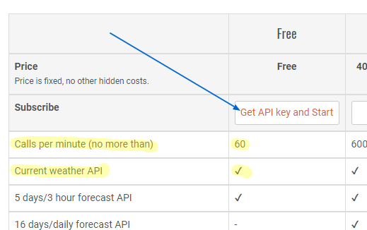

Weather API Activity - OpenWeatherMap.org
Introduction
The purpose of this activity is to introduce you to a weather API that we can consume and apply to our weather site project. This activity is required in order to complete the lesson enhancement assignment where we use live, weather data versus placeholder content on the Franklin town page.
The activity introduces you to the JavaScript XMLHTTPRequest object which we will use along with the site API specifications to retrieve data in JSON format. Be sure to complete the Assigned Readings before attempting this activity. We will sign up for a free API key through the site, look at JSON formatted results and then how to consume those results in test application.
Instructions
• Navigate to https://openweathermap.org and enter your city name in the input box provided and click Search. Click on the appropriate search result for your city/town. Note that some weather data is provided in those results. You may want to switch to C or F results using the buttons in the upper right corner of the site.

• A city template page loads with the current weather information loaded. The results have been formatted to fit into this view page. We will be using results like these and place them into our own town page(s). The raw format of the data will be requested in JSON format from which we can extract the named properties that we want to use on our page(s).
• In order to consume this information on our own site, we will need to use the Weather API that the site provides. Click on the API link in the main menu at the top of the page or navigate to https://openweathermap.org/api. Find the Current weather data section and click on the API doc button.

• The Current Weather Data page talks about how to call the current weather data for one location. We want to look at a sample response (output) by using the BY CITY ID method provided by the service. Scroll down to the By City ID and click on the Examples of API calls link provided.

When you click on that link, an API key is added for you in the URL and the results are in returned in a minimized JSON format. Look at the results and try to pick out some name-value pairs, e.g., "description":"scattered clouds", and try to make sense of the output. Some of the results may seem odd but remember that there are different units available to measure temperature such as Kelvin.
Type Kelvin to Fahrenheit as a Google Search to get the Google quick Unit Converter UI to complete a quick conversion test.
• Close that browser tab and click back on the site to get to the Subscribe option OR go to https://openweathermap.org/price. We will be using the Free account which allows no more than 60 calls to the service per minute. You want to be careful as you are testing your work to NOT preform excessive calls. Note that this service is provided under the Creative Commons Attribution-ShareAlike 4.0 International license (CC BY-SA 4.0) and that the data is open and licensed by Open Data Commons Open Database License (ODbL). WE NEED TO CREDIT OPENWEATHERMAP AS A WEATHER DATA SOURCE IN A VISIBLE PART OF OUR SITE. This will be a requirement of the assignment.
• Click on the Get API key and Start button on the Free account column.

• Bookmark the "How to Start" page that loads to keep as a reference. Click on the Sign Up button provided and proceed through the guided directions to get an API key (APPID) which you will need to store and keep secure for your use only.
Make sure to record your API key (APPID) as this unique key is required in the URL as a querystring to get/call the service.
• Return to the bookmarked #use page (https://openweathermap.org/appid#use) and read the sections about how to use API key in API call and getting accurate API responses along with access limitation warnings.
• In this activity and on the assignment, we will be using a Franklin town in the US with the CITY ID of 4156210. This number is needed in the API call URL.
For fun, you may want to look up your city/town or nearest location by using the Cities' IDs zipped (.gz format) list provided.
• Now, with your unique APPID and the CITYID we can test a simple call to the OpenWeatherMap API service. We will build a simple HTML document that references JavaScript that uses the XMLHttpRequest() object to open up the service URL with openweathermap.org.
"Use XMLHttpRequest (XHR) objects to interact with servers. You can retrieve data from a URL without having to do a full page refresh. This enables a Web page to update just part of a page without disrupting what the user is doing. XMLHttpRequest is used heavily in Ajax programming. Despite its name, XMLHttpRequest can be used to retrieve any type of data, not just XML, and it supports protocols other than HTTP (including file and ftp)." - MDN web docs
• You will need to bookmark the following page to reference all of the Weather parameters that are available to use in the API JSON response. For example, to get the current weather description, use weather.description
https://openweathermap.org/current#current_JSON
Activity Requirements
- In your assignments/lesson-9 folder location, build a simple, valid HTML page named api-test.html with a title and body contents of only a heading and single block element containing a span tag for the current temperature. Create a weatherapi.js file in your scripts folder and source reference that file before the <body> closing tag.
example body content:
<body>
<h1>OpenWeatherMap.org API Test</h1>
<p>The current temperature in Franklin is <span id="current-temp"></span>° F</p>
<script src="js/weatherapi.js"></script>
</body> - In your weatherapi.js file, create a new instance of the XMLHttpRequest object and assign it to variable named weatherRequest. Hint: let weatherRequest = new XMLHttpRequest();
- weatherapi.js: Create an apiURL string variable that stores the OpenWeatherMap.org API call URL as demonstrated in the documentation - https://openweathermap.org/appid. Use weather versus forecast data and make sure to use the https:// protocol and the Franklin City ID given above and your own APPID. In order to get Fahrenheit results, set the units option to imperial.
- weatherapi.js: Call the open method of the weatherRequest XMLHttpRequest object using the Get method, your apiURL string, and set the optional async parameter to true.
- weatherapi.js: Next, send the request using weatherRequest.send();
- weatherapi.js: To wait for the request object to load, use the onload method to to encase the JSON parser and output statements in a generic function OR use an addEventListener using the load parameter.
Hint: onload function and parsing the XMLHttpRequest JSON response.
weatherRequest.onload = function () {
let weatherData = JSON.parse(weatherRequest.responseText); - weatherapi.js: Write the entire parsed JSON output to the console for review and testing using console.log(weatherData); Make sure all output/write statements are within the onload function () { ... }.
- weatherapi.js: Write the current temperature to the innerHTML of the current-temp span tag in the HTML body.
- Styling the page is optional.
- Test the page and debug. To test the console output, use the browser Developer Tools (Inspect) tool and click the Console tab. Your page should display a valid current temperature in Fahrenheit (if you set the units to imperial) on both the screen and in the console tab.
Hints: Note the code sample in the MDN web docs Using XMLHttpRequest article.
Additional hints will be given in the virtual lab.